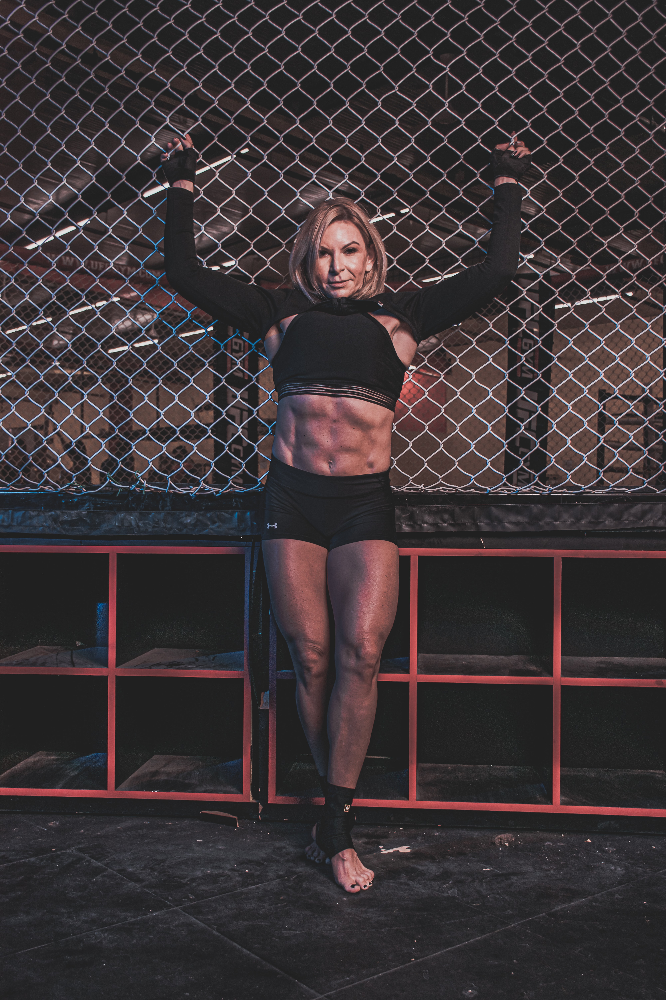
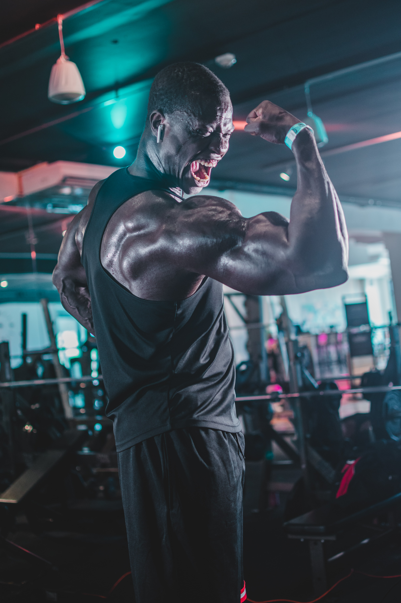

Dennis
.jpg)
Dennis DeVries separated from the US Army after serving for four years. Previously, he studied Mechanical Engineering at Clarkson University and received his Bachelors degree. He is now pursuing a qualification in software development at Code Fellows in order to enter the technology career field.
Stephanie
Stephanie is currently a student at Code Fellows working on a career change. She has spent many years working in seasonal hospitality which has given her expertise in customer service, teamwork, and working efficiently under pressure. She is devoted to developing her skill set so she can pursue a career in tech developing equitable software solutions that both assist and inspire a diverse group of users.
Jamall

Jamall Malik separated from the Air Force in September of 2021. The reason he's pursuing an education at Code Fellows is to become a excellent Software Engineer at Big Tech company. He wants to have a huge impact on the company that hires him as a Software Engineer.
Rui

Rui Guo is U.S Army veteran. He graduated from LSU and joined in the U.S Army after in order to pursue my military career. His heart make him want to re-join the IT industry after his military contract. "so here I am." he said.
Marvin
Marvin is currently a student at Code Fellows. As the global environment continues to shift, he hopes to be an active participant of that technological advancement. With an overall focus on full stack, the idea is to eventually provide the client a unique, all inclusive experience.